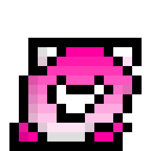
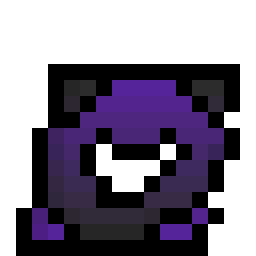

Amor...
Sí, como intuirás, me desvelé haciendo esto.
No sé por dónde empezar... Esta carta es, sobre todo, una disculpa. Sí, sé que ya me dijiste que me perdonabas y que no querías que esto pasara a mayores o siguiera, pero la verdad es que no puedo dormir sin antes escribirte. Las lágrimas caen sobre mi teclado sin cesar.
La verdad es que me sentí muy mal cuando me dijiste que ya estabas acostumbrada a que olviden fechas importantes como cumplir meses contigo. Yo soy una persona muy atenta a los detalles, y el hecho de que se me haya pasado eso me está torturando de una manera que ni te imaginas. Nunca he olvidado una fecha importante. No me justifico, luego actué mal, de forma impulsiva como siempre, y además muy egoísta. No quiero que pienses que no me importa nuestra relación, porque la verdad es que me importa mucho, y me duele que las cosas se arruinen por mis errores.
Hablando de ti, obviamente esto te cayó como un balde de agua fría: "¿Cómo pudo mi novio haber dejado pasar algo tan importante?", dirás. Y tienes toda la razón. La verdad es que no tengo ni la más mínima idea de cómo se me pasó, considerando que soy una persona muy atenta a todo. Pero bueno, no hay excusas para lo que hice, y no quiero que pienses que no me importa, sino todo lo contrario. Me importa tanto que estoy llorando como un estúpido. Si no fuera así, no estaría escribiendo esto ni contándote todo lo que pienso al respecto.
Con cariño y mucha pena,
Tu amor, Víctor
